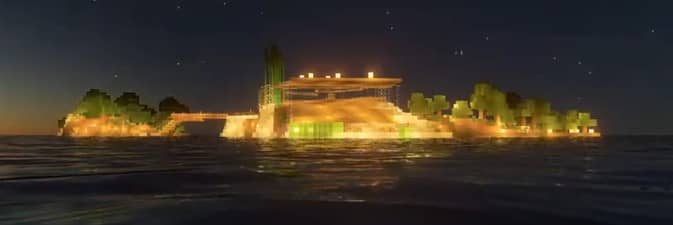

I am a first year student at the University of Sheffield and this page is part of my COM1001 module. On this page you can find information on what I have done previously, my skills in JavaScript and I will also shortly talk about each of my modules. My goal with this website is to eventually make it into my CV that displays all of my skills, projects and just in general what I have been working on. If you are interested to talk to me more you can email through the form.
I ran for the Computer Science department Councillor this year and came brutally second, only because people in our year decided we should have our own internal election between me and Liz.
Well I won in that fight, but became short of the votes that I needed from people who voted for Liz to win. But hey, it was fun and we had a really good time.
I have also played tennis for 8 years, here is a pictures of me. I'm the guy on the left!
I am from Estonia, I lived there for about 16 years after which I went to Slovakia to live with my uncle to do my A-Levels there. There I studied Mathematics, Computer Science and Physics.
In my free time I sometimes for fun edit some videos, here is one that made of my Minecraft house.
